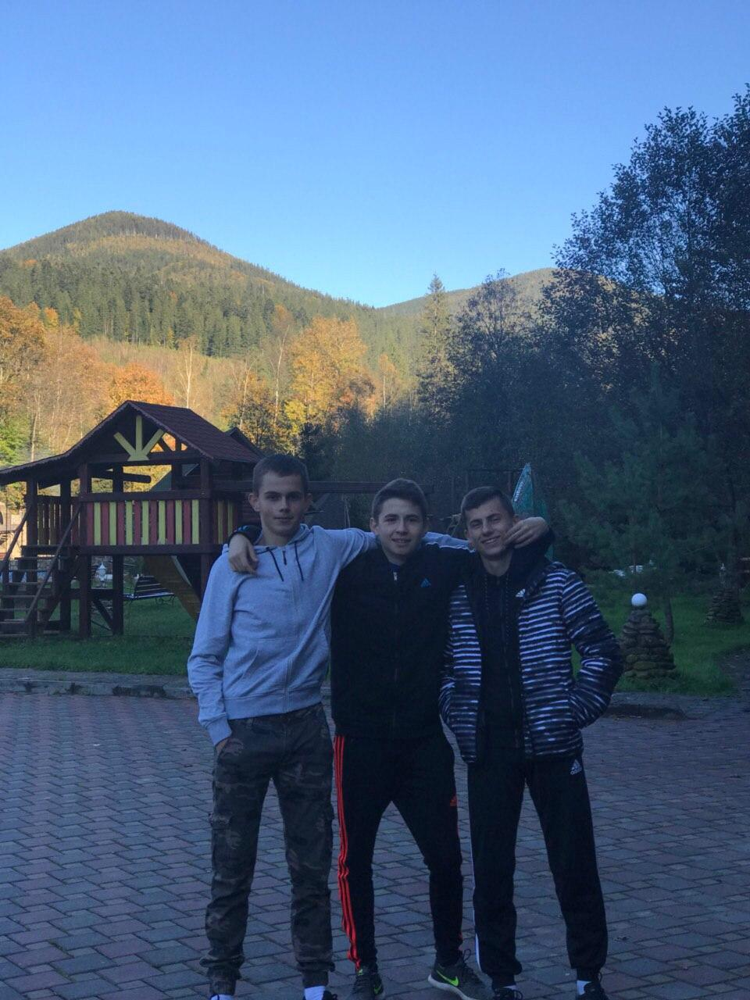
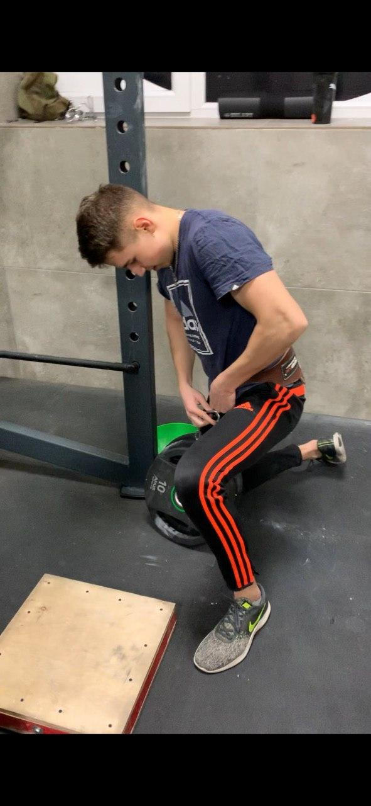
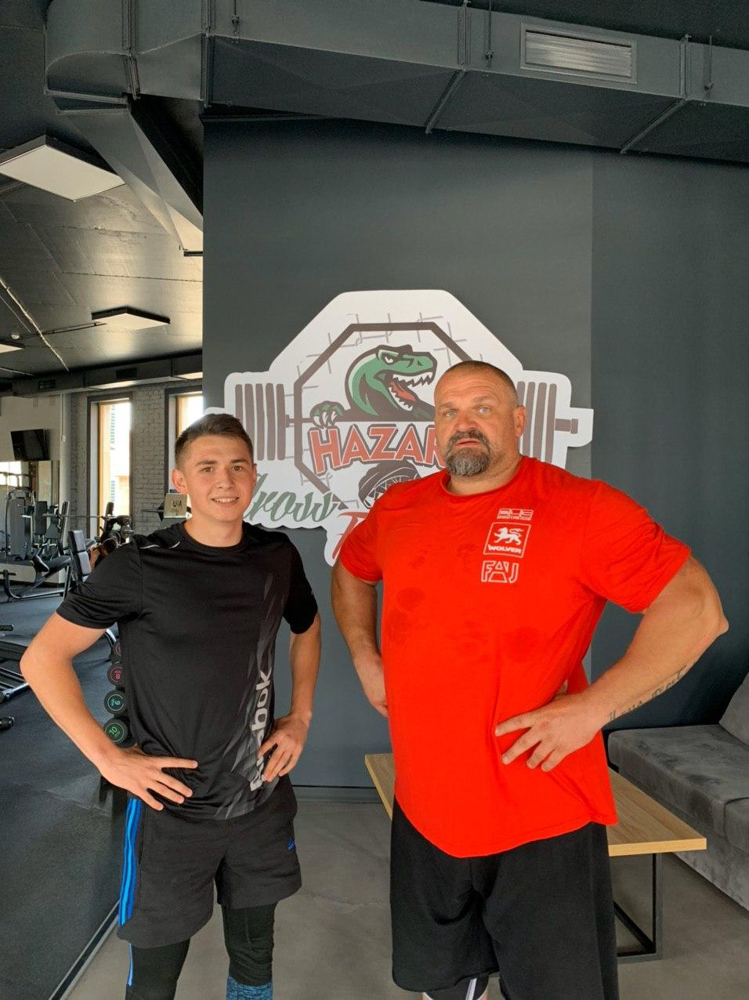

My biography
Я, Непеляк Євген Васильович народився 31грудня 2001року в місті Івано-Франківськ.
З 1 вересня 2008 року навчався в ЗШ№25.З першого по шостий клас отримував похвальний лист за старанне
навчання , але в 7 класі підзабив на школу.Брав участь в багатьох олімпіадах з фізики , математики та
історії.
22 червня 2016року вступив у Фізико-технічний ліцей при ІФНТУНГ , де навчався 2 роки після чого я
вернувся
назад любиму 25 школу через деякі непорозуміння з викладачами.
27 травня 2019 року закінчив школу, а 30 липня подав документи на вступ в ІФНТУНГ за спеціальністю
"Автоматизація на комп'ютерно-інтегровані технології" , де отримав високий рейтинговий бал через успішно
складене ЗНО.
Закінчив перший семестр з середнім балом 91,4.
Photo
  My Hobby
З 6 років по 13 відвідував секцію Тхеквандо ВТФ , де здобув чимало перемог та мав коричневий пояс.Закинув через травму.Любив бігати футбол в дворі ,це так затягнулость ,що я вирішив спробувати у футболі ,грав за футбольну команду на область ,але через навчання мусив закинути і футбол.Дальше нічим не займався протягом пів року ,но я знайшов вихід та почав займатись вуличним воркаутом після чого в 11 класі мене затянуло в зал.Зараз займаюсь в залі приблизно повтора роки та маю непогані силові показники.About my hobby
Пауерліфтинг або паверліфтинг (англ. powerlifting: power — сила, і lift — підіймати) — силовий вид спорту, у якому спортсмен долає вагу. Паверліфтинг, також називають силовим триборством. Пов'язано це з тим, що як змагальні дисципліни в нього входять три вправи: присідання зі штангою на плечах, жим штанги лежачи на горизонтальній лаві, і тяга штанги — які в сумі і визначають кваліфікацію спортсмена.У паверліфтингу, на відміну від бодибілдингу, важливі силові показники, а не краса тіла

Кросфіт (з англ. CrossFit) — брендована методика фітнесу, створена Ґреґом Ґласманом. Є зареєстрованою торговою маркою організації CrossFit, Inc., яку заснували Ґреґ Ґласман та Лорен Дженай у 2000 році. Тренування кросфіту просувають і як філософію фізичних вправ, і як змагальний вид спорту; до них входять елементи високоінтенсивного інтервального тренування, важкої атлетики, пліометрики, пауерл іфтингу, гімнастики, гирьового спорту, зарядки, стронґмену та інші вправи. Такі тренування практикують члени більш ніж 13 000 спортзалів-філій, більше половини яких розташовано у Сполучених Штатах, а також люди, що виконують щоденні тренування